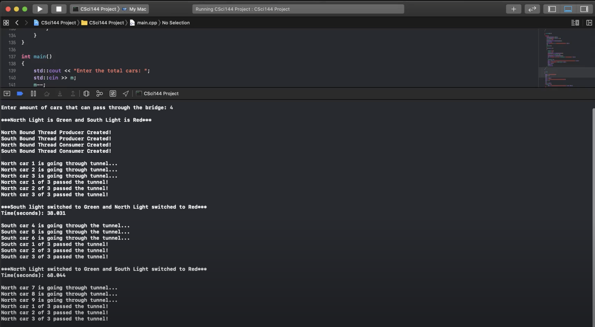
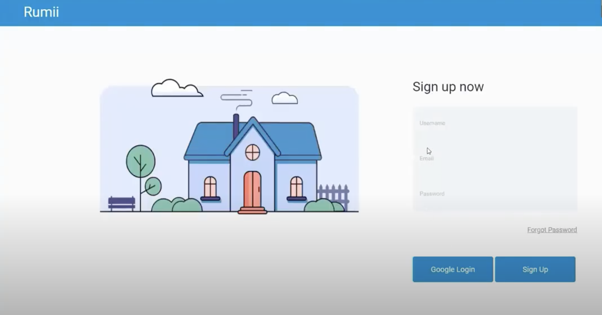

A little about me.
Operations Engineer with a B.S. in Computer Science from Fresno State. I work at AgMonitor overseeing data quality and operations across 3,400 agricultural pumps, 300 solar sites, and 100+ customers. I build internal tools, coordinate mobile app delivery, and translate technical data into operational insights. Always learning, one problem at a time.
Recent Work.
Operations Engineer | AgMonitor
August 2025 – Present | California
Oversee data quality and operational reporting for approximately 3,400 agricultural pumps and 300 solar sites across 100+ customers. Independently manage customer accounts and high-level technical support. Coordinate mobile app development delivery, conduct in-field training, and build internal tools using Python and vendor APIs. Analyze electricity tariffs, pumping performance, and irrigation costs to support reporting and cost-saving recommendations.
Software Testing Engineer | AgMonitor
November 2023 – July 2025 | California
Executed functional and regression testing across agricultural monitoring software, identified reproducible defects, and verified fixes with engineering and product teams. Validated customer-facing workflows, data presentation, and reporting accuracy.
Global Technology Software Engineer | Bank of America
July 2022 – November 2023 | Dallas, TX
Collaborated with product owners and stakeholders to translate requirements into Workday HCM improvements. Participated in agile sprints and supported configuration and release-related troubleshooting.
Technology Lead | DISCOVRe, Fresno State
January 2021 – June 2022 | Fresno, CA
Helped launch a campus-wide technology initiative, supported a ticketing system, and coordinated device deployment, support, and technical troubleshooting.
IT Help Desk Intern | Grower Direct Nut Co.
Summers 2018 – 2020 | Hughson, CA
Provided IT support, tested RFID software, and configured employee devices and network access.
Projects and Course work
This Website!
Personal Project: Developed this website to practice web development and also document my achievments and what I have been working on!
Python Remote Job Site Scanner
Personal Project: Developed a website scaper using Python and Beautiful Soup to practice for a project I am creating
Fashion MNIST
Personal Project: Training a neural network for image classifcation using clothing.

CSci 144: Operating Systems.
One-Way Tunnel Simulator: Developed a single lane tunnel using C++ mult-threading to simulate cars passing one each side based on if the light at the end of the tunnel is red or green. The project is complently dynamic based on two inputs, the total amount of cars passing on both sides and the max number of cars that could pass through the tunnel at their given turn.

CSci 150: Software Engineering I.
Rumii Web App: Developed a web application called Rumii that split bills within a household. I contributed to all the front-end work within the project.

CSci 152: Software Engineering II.
Mepo Web App: Social media web app that allows user to share memories and blogs and organize the posts in related albums for followers can see.

CSci 166: Principles of Artificial Intelligence.
Snake Game with AI: Developed a reinforcement learning project based off of the Snake game which trains the snake to eat the food present in the environment. I worked on the reinforcement algorithm's possible actions as well as the states the agent could be in then using these points to make the next move.

CSci 115: Data Structures in System Design.
Shortest Path Game: Developed a project in C++ that created characters with different attributes that need to traverse a dynamic map. In this project I implemented custom characters, dynamic terrain generation, and shortest path algorithm for characters based the terrain they were traversing.